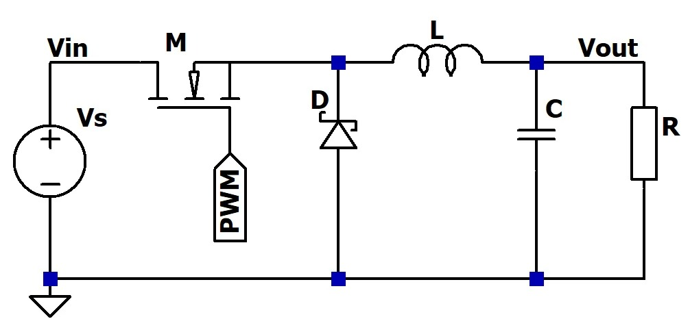

Konverter adalah perubah tegangan DC ke tegangan DC lainnya dalam level atau polaritas yang berbeda. Ketika tegangan DC yang tersedia tidak sesuai dengan tegangan yang dibutuhkan oleh suatu perangkat atau rangkaian elektronik, maka digunakanlah konverter. Karena itu konverter merupakan bentuk power-supply juga.
Down-converter.
Down-converter menurunkan tegangan DC ke level yang lebih rendah. Misalnya tegangan 12V dirutunkan menjadi 3,3V. Kadang power-supply linier yang teregulasi dan berfungsi menurunkan tegangan DC disebut juga dengan down-converter, contohnya misalnya sebagaimana yang telah diulas dalam : Konverter DC 12V ke tegangan yang lebih rendah .
Buck-converter.
Buck-converter adalah konverter penurun tegangan khusus yang menerapkan sistem SMPS (Switching Mode Power Supply). Ia adalah konverter dengan efisiensi yang lebih tinggi jika dibandingkan dengan power-supply penurun tegangan biasa (sistem linier). Efisiensinya dapat mencapai lebih dari 90%
Buck-converter memanfaatkan sifat induktor terhadap guncangan listrik berfrekwensi tinggi dan bekerja dengan adanya denyut-denyut tegangan (sebagaimana layaknya SMPS). Karena itu di dalam sebuah rangkaian buck-converter selalu terdapat generator sinyal, transistor penguat, dioda, kondensator dan induktor. Konsep dasar rangkaiannya dapat digambarkan sebagai berikut :
Gambar di atas memperlihatkan rangkaian dasar buck-converter.
Induktor ditaruh di sirkit emitor jika yang digunakan adalah transistor bi-polar (NPN). Jika yang digunakan adalah transistor FET/MOSFET (kanal N) maka induktor ditaruh di sirkit source.
Apabila basis T1 sedang mendapatkan denyut tegangan positif, T1 akan menghantar sesaat meluluskan tegangan V+in ke emitornya yang terangkai dengan induktor L1 dan katoda D1. Dengan demikian tegangan pada titik x (emitor T1) sesaat nyaris sama dengan tegangan pada kolektor T1. Pada saat ini mengalirlah arus melalui L1 mengisi muatan C1 dan mengaliri beban (load).
Karena adanya arus yang mengalir itu maka pada titik y (hanya sesaat) terdapat tegangan yang lebih kecil daripada titik x. Pada waktu yang hanya sesaat ini tersimpanlah energi listrik di dalam induktor.
Manakala denyut tegangan pada basis T1 telah hilang (berganti menjadi nol Volt) T1 tidak lagi menghantar, dengan demikian tegangan pada titik x menjadi nol Volt. Namun karena adanya energi listrik yang tersimpan di induktor maka energi ini lalu dilepaskan oleh induktor sehingga tegangan pada titik y kini menjadi lebih tinggi daripada titik x yang telah menjadi nol Volt itu. Mengalirlah arus sehingga C1 tetap terisi dan beban tetap teraliri arus meskipun T1 tidak lagi menghantar. Arus ini terus mengalir ke ground dan menembus dioda D1, hingga kemudian berakhir di titik x.
Keadaan ini berlangsung sesaat, yaitu selama tidak adanya denyut tegangan pada basis T1. Karena itu untaian L1, C1 dan D1 disebut juga sebagai untaian “fly-wheel”.
Ketika basis T1 kembali mendapatkan denyut tegangan positif, maka proses seperti yang telah diterangkan di atas akan kembali berulang dari awal, begitulah seterusnya selama generator sinyal tetap memberikan denyut-denyut tegangan kepada basis T1.
Umumnya buck-converter bekerja dalam “continuous-mode” di mana arus dari induktor (ketika pelepasan energi) senantiasa diupayakan agar tidak mencapai nol sebelum terjadinya proses penyimpanan energi selanjutnya. Untuk mencapai hal ini maka biasanya nilai induktansi dibuat cukup besar bagi frekwensi yang dihasilkan oleh generator sinyal.
Adapun level tegangan keluaran yang dihasilkan oleh buck-converter secara praktis didapatkan dengan perhitungan :
V+out = V+in (tON / T)
V+out adalah tegangan keluaran dalam Volt
V+in adalah tegangan masukan dalam Volt
tON adalah waktu munculnya denyut tegangan positif dalam detik/second
T adalah periode waktu satu putaran dalam detik/second. Dengan kata lain T adalah tON + tOFF di mana tOFF adalah waktu kosong denyut dalam satu putaran.
Semakin besar tON akan semakin besar tegangan keluaran dan semakin kecil tON akan semakin kecil pula tegangan keluaran. Karena itu pada buck-converter untuk menyetel level tegangan keluaran dapat dilakukan dengan menyetel “duty-cycle” dari denyut-denyut yang dihasilkan oleh generator sinyal.
Fasilitas pengontrol tegangan keluaran biasa ditambahkan pada rangkaian-rangkaian buck-converter untuk mendapatkan tegangan keluaran yang stabil dan akurat. Pengontrolan tegangan keluaran ini dilakukan dengan memasukkan sebagian tegangan keluaran ke rangkaian pengontrol melalui saluran feed-back (FB).
Dengan adanya sirkit pengontrol tegangan maka tegangan keluaran dapat dibuat stabil meskipun tegangan masukan tidak tetap/bervariasi.